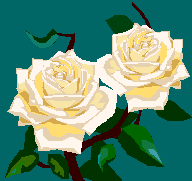

Посвящается президенту США
Рональду Рейгану
Вы нас поздравили. Спасибо Вам за это!
Вы пожелали процветанья нам.
Под нами общая вращается планета,
Её нельзя разрезать пополам.
Хотите ль Вы иль вовсе не хотите,
Но связаны мы все одной судьбой:
На том же, что и мы, вы шарике летите
И нет у нас, увы, земли другой.
Ведь это всем без исключенья ясно!
Так почему Вам это не понять?!
Зачем же в погреб ядерный, ужасный
Наш общий дом решили превращать?
Вы нас боитесь? Страх – плохой советчик!
И потому под ядерный психоз
Вы в общий дом наш целите ракеты
За наш букет цветущих мирных роз!
Но если в погреб искорка забьется,
То шар земной обуглится за миг!
Ни победителей, конечно, не найдется,
Ни побежденных не услышим крик.
На что вы уповаете, скажите?
Чем объяснить Ваш ядерный акцент?
С позиций силы говорить хотите?
Неверный ход, о, мистер президент!
Вы преданы, как будто, делу мира.
Слова одни, а дела вовсе нет!
Опутали Вы базами полмира
И частоколом ядерных ракет.
А сесть сейчас за стол переговоров
Вы не хотели – что тогда слова?
А ведь всегда от праздных разговоров
К делам конкретным Вас зовёт Москва!
Взгляните на себя сквозь окуляр потомков,
(Коль таковые будут на земле),
Вас проклянут, портреты Ваши скомкав,
За ужас смертный в ядерном котле!
Пока не поздно, смерч остановите!
Закрутится – тогда уж не унять,
За стол переговоров поспешите,
Чтоб джина страшного в бутылку вновь загнать.
Всё человечество, все скажут вам спасибо
За Ваш единственный, но очень верный шаг,
Когда чудовищная ядерная глыба
Закрыта будет глубоко в овраг!
Пусть на земле цветут лишь только розы,
А на оружие не тратится и цент
И пусть не знает ядерной угрозы
Наш общий дом, о мистер президент!
